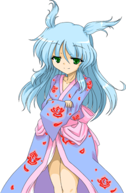
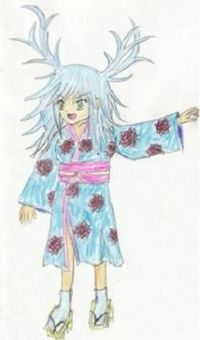

- Welcome to Touhou Wiki!
- Please register to edit. For assistance, check in with our Discord server or IRC channel.
Fan-made characters/Sasha Sashiromiya
Sasha Sashiromiya sa̠ɕiɺ̠o̞mija̠ sa̠ːɕʲa̠ | |
|---|---|
|
 Sasha in White Names Spoiled Past Shadow User whose Tales are Handed DownMore Character Titles | |
| Species | |
| Abilities |
Manipulating shadows |
Music Themes | |
|
黒と影の偽歴史 ～The Fake with High Quality | |
Appearances | |
| Official Games | |
| |
| Other | |
| |
Sasha Sashiromiya (左城宮 則紗) is a fan-made character created by a Nico Nico Douga user called NRT. NRT is not a VIPPER from 2ch. Sasha is a daidarabotchi who can control shadows, who apparently is a "ground-type youkai".
General Information[edit]
Sasha first appeared on the video "I tried to create a new character for Touhou Hisoutensoku, "Sasha Sashiromiya" (東方非想天則、新キャラ”左城宮 則紗”描いてみた Touhou Hisoutensoku, shin kyara "Sashiromiya Sasha" kaitemita) on July 26, 2009. NRT wanted to show his/her idea of a final boss for Touhou Hisoutensoku, which the full version was released on August 15th 2009. Later on, it was said that she was "a youkai who was on track to be the culprit behind the Hisoutensoku Incident. For some hard-to-understand reason, she's treated like she was never there." After about four years of official absence, Sasha made an actual fangame appearance as the 2nd stage midboss of White Names Spoiled Past, a game that also has characters based on unknown figures in official Touhou Project works.
Ability[edit]
Sasha has the ability to manipulate shadows. With this, despite been a Daidarabotchi that are considered to be hugely figures, she projects shadows on fog or mountain mist, creating what appears to be huge figures. Since Sasha's body is within that shadow, she has a limit to the destruction she can cause with its size. Apparently, because the Japanese word for 'moonlight' (月影) uses the kanji that means 'shadow' (影), she can also manipulate moonlight. One story involved with this is that many people witnessed countless shadows appearing to dance in the moonlit mountain fog, and the story of it was passed down as that of a legendary witches' banquet.
Background Information[edit]
Name[edit]
Her fill name is Sasha Sashiromiya (左城宮 則紗). Her last name Sashiromiya (左城宮) has sa (左) that literally means 'Left', shiro (城) that literally means 'Castle' and miya (宮) that literally means 'Palace'. Her first name has sa (則) that literally means 'Law' and sha (紗) that literally means to 'Gauze'. It seems that "Sasha" is written using ateji because it's a given name with origins in the Romance languages, which has the meaning "defender, helper of mankind". According to her profile, Sasha's name is a reference to the anime Umineko, which should have some relation to the cosplay of Marisa Kirisame.
Design[edit]
Sasha's design shows that she has green eyes and blue hair with antler-like twin ahoge. She wears a blue yukata with a number of red lotus flowers around and wears some white socks and geta shoes. Although she's a Daidarabotchi, her height is the same as a human. According to her profile, her species is perceived as being extremely huge, but what they do is project their shadows on mountain mist, manipulating it so they just look huge.
Sasha's Appearances[edit]
- White Names Spoiled Past
Sasha appears as the stage 2 midboss in White Names Spoiled Past, a fangame made with the cooperation between NRT and others, including the team behind The Last Comer. The plot itself involves an incident where the humans in Gensokyo find themselves unable to form new memories. The cast features characters made by NRT as hypothetical versions of unknown figures from official games of the Touhou Project that aren't very notable.
In her appearance, Uka has requested her services as a bodyguard; Sasha herself couldn't care less about bodyguarding because she wanted to kill time by having a bout with Reimu Hakurei and others. It's said that Reimu and Marisa Kirisame have met her, but kind of haven't, where Sanae Kochiya didn't know who she was. The game breaks the fourth wall as how she's not a forgotten character, which is true as she is notable amongst the fanbase.
Spell Cards[edit]
| Name | Translated | Comments | Games | Stage | ||
|---|---|---|---|---|---|---|
| Total: 11 | ||||||
| 月影「月光照らす禿山の一夜」 | Moonlight "A Moonlit Night on Bald Mountain" | WNSP | St. 2: E/N | |||
| 月影「ヴァルプルギスの眩い夜」 | Moonlight "Dazzling Walpurgis Night" | WNSP | St. 2: H/L | |||
| 六軒「見えない影の密室」 | Rokken "Sealed Room of Invisible Shadows" [1] | WNSP | St. 2: E/N | |||
| 六影「ファンジターシャドウ」 | Rokage "Fansyta Shadow" [2] [3] | WNSP | St. 2: H/L | |||
Fandom[edit]
Despite been a fan-made character, Sasha is a very notable character in the fanbase, arguably as notable as Mitori Kawashiro. As such, she's often compared to other fan-made characters such as Mitori, Rinbokusan Sasaki and Karen Yawata.
- Derivative work appearances: She's one of the few fan-made characters to make an appearance in Touhoumon, however, she doesn't appear in the official patch of the game.
- Friends with Cirno: Sasha is often seen with Cirno in fan works, presumably because Sasha's a Daidarabotchi and that Cirno was chasing one in Touhou Hisoutensoku. They either shown to be friends or enemies.
Official Profiles[edit]
|  | 東方非想天則キャラ 左城宮 則紗 種族 だいだらぼっち 能力 影を操る程度の能力 詳細 だいだらぼっち正体は、霧の 名前はうみねこを意識して 早くプレイしたいですね。 最後に一言 これ釣りだから！ ご視聴ありがとうございました。 |
Touhou Hisoutensoku Character Sasha Sashiromiya Species Daidarabotchi Ability Ability to control shadows Details The true identity of the Daidarabotchi is, The name is probably some I really want to play with her soon. Also a few last words This is only a joke character! Thanks for watching this video. |
This is (supposed to be) the official theme for Sasha. It was uploaded by SHACHI on September 11 2009.
The nicovideo |
黒と影の偽歴史 ～The Fake with High Quality | Fake History of Black and Shadow ~ The Fake with High Quality | ♪ SHACHI |
| From the nico video | |||
|---|---|---|---|
|
どうも。名前があるとしたら KUJIRA です。 東方非想天則のラスボスとして名高い彼女の曲（のつもり）です。 以下言い訳… 作曲とか初めてだし…MIDI扱い始めてまだ2ヶ月半だし… SD-90あればZUNペットできるらしい... |
Thank you for watching. You can call [it] KUJIRA. It is (planned to be) the song for the famous Sasha in Touhou Hisoutensoku. And for some excuses and apologies...It's my first time composing a song... It has been 2 months since I've started working it to the quality of MIDI... If I'd an SD-90 I could even become some Pet of ZUN... | ||
| 左城宮 則紗（さしろみや サーシャ） 種族 だいだらぼっち 影を操る程度の能力 |
Sasha Sashiromiya Species: Daidarabotchi Abilities: Capable of manipulating shadows |
References[edit]
- ↑ A reference to Umineko no Naku Koro ni, a murder mystery series taking place on the island of Rokkenjima. Locked-room mysteries are very common in the series. Sasha's own name (a Western name spelled with kanji, then "___omiya") happens to be a reference to the Umineko characters' own names as well.
- ↑ "Rokage" is a pun on "Rokken" from the previous version of the spell card; the second kanji is switched with the kanji for "shadow".
- ↑ "Fansyta" is a typo of "fantasy" that occurred in the original release of one of the Umineko games. It quickly became a meme amongst the Japanese fandom, poking fun at how the series already played around with the definition of its "fantasy" and "mystery" genres.
| This page is part of Project Characters, a Touhou Wiki project that aims to write proper descriptions for all official characters of Touhou Project. Please keep the character page guidelines in mind when contributing. |